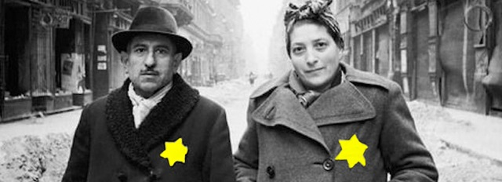
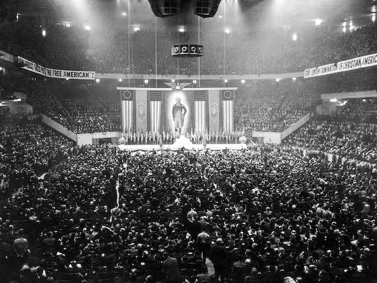

2019-08-09 08:00

Many Americans have become increasingly alarmed by Donald Trump’s white supremacy, his contempt for democratic institutions of courts and Congress, efforts to redefine and disconnect human rights from international norms, and his administration’s recent participation in a conference on white nationalism. While few would go so far as to say that history is repeating itself, the Trump administration sure seems to be hitting a lot of Nazi notes, if not some Lieder. Understanding how and how rapidly things devolved in Germany in 1933 is an important exercise — especially if we want to make sure that “Never Again” means precisely that.
Ethnonationalism had a dark and dismal history in Germany long before precursors of the Hitlerjugend and the SS arose — long before Hitler. As a political movement Nazism had slow and steady growth after the First World War, but it wasn’t until 1932 when the Nazi party won 37.4% of the vote that Hitler came to power. A year later, in 1933, Hitler became Kanzler. That same year Dachau was constructed and was used mainly for political prisoners. Germans of the day might have felt a bit uneasy about concentration camps, but for the moment they were mainly being used on Communists.
Richard E. Frankel, Associate Professor of Modern German History at the University of Louisiana at Lafayette, notes that, just as Trump did recently, Hitler pardoned war criminals. “In August of 1932, in the town of Potempa, nine Nazi Stormtroopers murdered a supporter of the German Communist Party, kicking him to death in his own apartment as his family watched in horror. Six were convicted with five receiving the death penalty. After the verdict, Hitler sent them a telegram in which he declared to them his ‘boundless loyalty.’ Shortly after he came to power in 1933, he pardoned the killers.” This was just the beginning of many such pardons. Hitler’s telegram should have been a signal to Germans of Hitler’s contempt of democratic norms, just as pardoning Joe Arpaio should have warned Americans about what Trump would do later.
1933 was a particularly ominous year in Germany. As Kanzler, Hitler declared that German foreign policy demanded the expansion of its territory. Germany First. The staged Reichstag fire and the Ermächtigungsgesetz (“Enabling Act”) consolidated Hitler’s power and Congress — I’m sorry, I meant the Reichstag— soon ceased to have any real political power. The Kanzler was now a Führer and his party had transformed into a cult of personality in which the leader’s wishes superseded any law. Political parties other than the Nazi party were soon illegal, trade unions were banned, and the first book burnings took place that year. Echoing themes we see today, Nazi Germany withdrew from the League of Nations. Germany was above international norms. To make Germany great again, it literally had to beüber Alles.
Within short order there were more mass-pardons, and the Gesetz zur Wiederherstellung des Berufsbeamtentums (“Law for the Restoration of the Professional Civil Service”) purged the civil service of Jews. It was called a “restoration” for reasons MAGA America would love — the Civil Service had to be made great, and completely Christian, again. The military was also strengthened, universal conscription ordered, and by 1935 the first Race Laws were enacted. The Trump administration’s threats to override the Fourteenth Amendment — by decree — would confer citizenship by race and not birthplace.
In 1938 mobs organized by the Nazis carried out Kristallnacht — a night of terrorization of German Jews — and the victims were actually charged with the offense. The pretext for Kristallnacht was the assassination of Nazi diplomat Ernst vom Rath by a 17-year-old German Jew in Paris who had been expelled from the country. German Jews were then collectively punished with a Judenvermögensabgabe, a fine of one billion Reichsmarks for vom Rath’s killing. In today’s dollars this was $5.5 billion, to be satisfied by the expropriation of 20% of all Jewish property in Germany, Austria, and the Sudetenland. The Nazis were just getting warmed up.
Despite the human rights abuses that had been occurring for over a decade (1929-1939), it was only when Germany invaded Poland that Britain and France declared war. In 1940 Denmark and Norway were occupied by Nazi Germany, followed by the Netherlands, Belgium, Luxembourg, and France. Germany developed plans for blitz-bombing Britain. In 1941 Yugoslavia and Greece were occupied. Germany advanced on Stalingrad. In 1941 Nazi Einsatzgruppen were already coordinating the wholesale slaughter of Jews in European towns and cities where no concentration camps existed. Finally, after Pearl Harbor, in 1941, Hitler declared war on the United States. In 1942 the Wannsee Conference approved plans for the mass extermination of Jews, but the slaughter had been going on for years.
Germany was regarded by many Americans as a model of power and technological superiority. And a number of American industrialists supported Nazism. Fred Koch, the grandfather of today’s Koch Brothers, and his company, Winkler-Koch Engineering, provided the Nazis with oil refining technology. George Bush’s grandfather Prescott Bush did business with the Third Reich until 1942, when some of his assets were seized under the 1942 Trading with the Enemy Act. Ford, Coca-Cola, Kodak, GE, IBM, Standard Oil, and even Random House all did business with Hitler. In 1939 there was a massive pro-Nazi rally in Madison Square Garden which demonstrated that many Americans regarded Nazi values as American values.

Today, while we are not necessarily on the same path to Nazism as Germany was in 1933, there are many lessons we should learn from the history.
Owing to Germany’s massive militarization, it presented an almost unstoppable threat to the rest of the world. By making adulation of the Führer an explicit operating principle, democracy was easily subverted by spineless politicians who prized power over democracy. By explicitly demonizing a minority, and through the codification of racist laws, democracy was further poisoned. A nation that relied on propaganda, repression and brutality was overwhelmed in every other aspect of civilization except for industrial production — which, like ours, included slave labor. Under Nazism Germany had a Constitution and ostensibly operated under rule of law. But the entire system was cruel and immoral. Today Germans admire dissidents like Dietrich Bonhoeffer. The current Kanzler just celebrated the 75th anniversary of an attempt to assassinate Hitler. It is said that history is written by the victors. Apparently so is morality.
Finally, one cannot underestimate the psychology and manipulations of a leader on a receptive public, especially when properly conditioned by state propaganda. Hitler was a man who admired other dictators, notably Benito Mussolini who preceded him in authoritarian rule by more than a decade. Besides Hitler’s popular rallies, one of which was immortalized by Leni Riefenstahl in Triumph of the Will, Hitler had enthusiastic help from a xenophobic mass media. Julius Streicher’s Der Stürmerwas the FOX News and Sinclair Media of the day.
Though there had been warning signs for years, in an eight year period from 1933 to 1941 one of the most “civilized” nations on earth completely lost its collective mind, becoming a nation of war criminals and mass murderers. Today, in MAGA America, the haters are not singing precisely the same Nazi Lieder — but they sure are hitting a lot of the same notes.